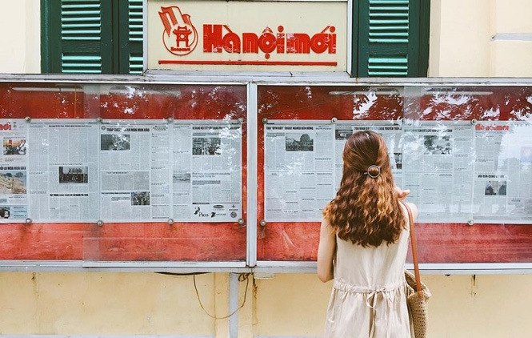

Nơi đây, hàng ngày đón đưa biết bao lượt người qua, tấp nập, ồn ã không ngừng. Và hiện nay nó lại càng thêm phần náo nhiệt hơn, khi trở thành một trong những địa điểm vui chơi sống ảo ở Hà Nội.
Tòa soạn báo Hà Nội Mới được xây dựng từ năm 1893 theo phong cách kiến trúc thịnh hành của Pháp những năm thuộc địa ở Đông Dương. Đây là một trong những điểm nhấn rõ nét, góp phần tô điểm cho không gian của phố đi bộ Tràng Tiền cũng như toàn bộ khu vực Hồ Hoàn Kiếm.
Tòa soạn báo Hà Nội Mới có kết cấu ba tầng chính và một tầng áp mái với màu sơn vàng nhạt, kiến trúc kiểu Pháp gần như vẫn được giữ nguyên vẹn. Dưới ánh nắng mặt trời, tòa soạn ánh lên như được dát vàng, nổi bật giữa màu xanh của những hàng sấu ven Hồ Gươm.
Bên trái tòa soạn có đặt một bảng tin rộng chừng 2m là nơi dán những tờ báo in số ra hàng ngày cho người dân thủ đô qua đây xem và theo dõi thông tin. Có lẽ đây là một nét riêng biệt của báo Hà Nội Mới so với nhiều tòa soạn báo khác ở nước ta. Đã thành thói quen, mỗi buổi sáng sớm, nhiều người dân ở phố hàng Ngang vẫn đều đặn đi tập thể dục và không quên ghé qua bảng tin của tòa soạn báo Hà Nội mới để đọc những thông tin mới.
Back to Main Menu